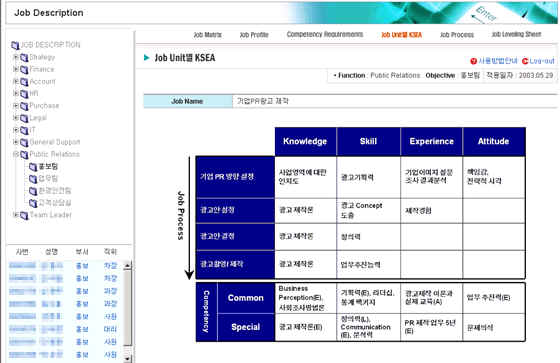

|
개요 | |
 |
개요 | |
| Job Unit별 KSEA는 선택된 해당 Job의 수행을 위해 요구되는 요구역량을 Job 수행 단계(Job Unit) 별로 도출한 내용과 Common / Special로 구분하여 도출된 Competency를 조회한다. | ||
|
용어 설명 | |
| 1) Job Process : 해당 Job을 수행하는 데 있어서의 진행 상의 중요 활동/단계를 의미함. | ||
| 2) Knowledge : 교육을 통해 획득할 수 있는 특정 분야에 대한 정보 | ||
| 3) Skill : 훈련을 통해 획득할 수 있는 특정 업무를 수행할 수 있는 능력 | ||
| 4) Experience : 특정 업무를 수행하기 위해 반드시 필요한 사전 경험 | ||
| 5) Attitude : 특정 양식의 행동을 유도하는 내재된 속성 | ||
 |
화면사용법 및 유의사항 | |
| <그림 1. Job Unit별 KSEA 조회화면> | ||
|  | ||
|
Job Unit별 KSEA 조회 | |
| 1) 해당 Job의 수행을 위해 요구되는 요구역량을 Job 수행 단계(Job Unit)별로 도출한 내용과 | ||
| Common/Special로 도출된 Competency를 조회한다. | ||
| 2) 동 조회 화면은 Power Point로 작성된 내용을 화면에 그대로 투사한 것임. | ||
|
다음 화면 (Job Process 조회) | |
| 1) 해당 Job의 업무수행을 위한 활동과 의사결정 단계, 진행순서 등을 조회한다. | ||
| 2) Job Unit별 KSEA Header 부문의 ‘Job Process’ Icon을 선택하면 해당 Job의 Job Process 화면으로 | ||
| 이동한다. | ||
|
|